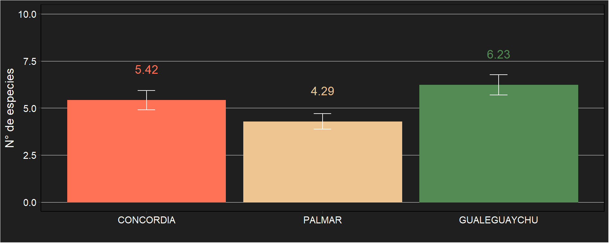
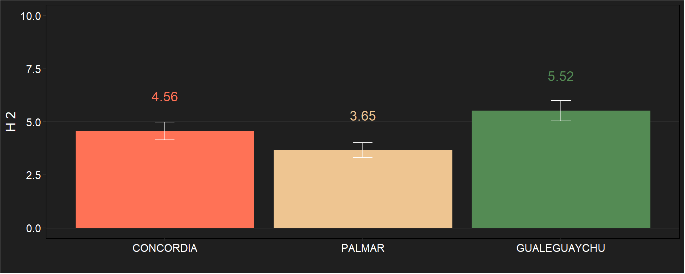
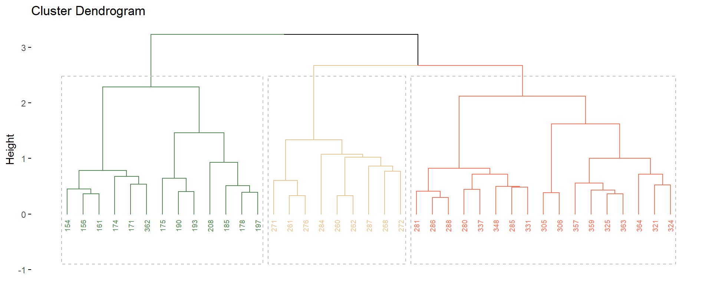
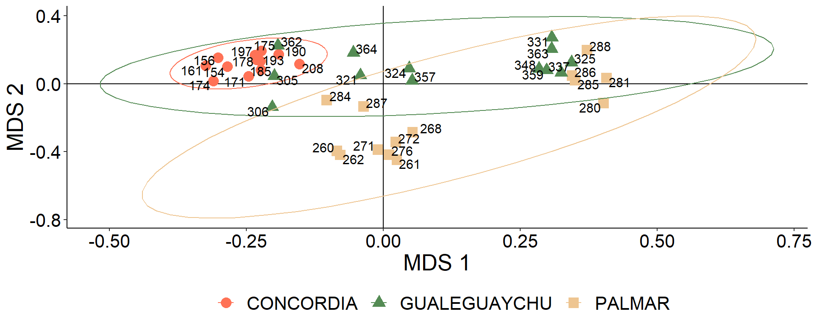

Las superficies de bosques nativos han disminuido en las últimas décadas en la Argentina por el avance de la frontera agrícola y ganadera (Viglizzo y Jobbágy, 2010). Sin embargo, aún se conservan áreas con menor efecto antrópico como ocurre en la selva en galería del río Uruguay en la provincia de Entre Ríos. Estas áreas son fuentes de biodiversidad por el fenómeno de intrusión de vegetación por el cual especies de la Provincia Paranaense se desplazan hacia el sur por los ríos Uruguay y Paraná y se adaptan al microclima ribereño que toma un aspecto selvático (Bertucci et al., 2008). Esta adaptación da origen a una gran variabilidad fenotípica con potenciales servicios ecosistémicos para la humanidad. Este es el caso de Hexachlamys edulis (O. Berg) Kausel & D. Legrand, “ubajay”, especie que ha sido observada en áreas cercanas a cursos de agua y selvas o bosques en galería de los ríos Paraná y Uruguay (Proença, 2006). Esta especie se destaca por su fruto comestible y su potencial como recurso forestal no maderable de importancia para la salud y la nutrición (Vignale y Bisio, 2005). En el marco de un estudio de variabilidad fenotípica del ubajay se genera la necesidad de conocer el estado de conservación entre los sitios de muestreo. Para esto, la riqueza y abundancia de las diversas especies registradas es un importante indicador de la biodiversidad y del avance antrópico junto con la cuantificación de especies nativas y exóticas. No obstante, cabe aclarar que se entiende por riqueza a la cantidad de especies diferentes por superficie o punto de muestreo, mientras que la abundancia es el número de individuos por superficie o punto de muestreo (Rodríguez et al., 2005).
El presente trabajo tuvo como objetivos:
Evaluar los cambios en la riqueza y abundancia de especies vegetales acompañantes de árboles de ubajay en tres poblaciones de la selva en galería del río Uruguay en la provincia de Entre Ríos.
Explorar la relación entre nativas y exóticas.
Conocer las principales familias presentes, tanto exóticas como nativas.
Detectar alguna posible asociación entre el ubajay y otras especies.
Relacionar las poblaciones y las accesiones según su similitud en la vegetación acompañante.
Se seleccionaron 40 ejemplares de ubajay crecidos en forma espontánea en 3 poblaciones de la selva en galería del río Uruguay, dentro de la provincia de Entre Ríos. La distribución de estos árboles seleccionados fue: 12 ejemplares en Concordia, 15 ejemplares en el Parque Nacional El Palmar y 13 en la reserva privada El Potrero de San Lorenzo en Gualeguaychú. Para el registro y recuento de las especies acompañantes se determinó un radio de 3 metros desde el fuste de cada árbol seleccionado (28,3 m² área mínima de cada censo), donde se clasificó taxonómicamente y se registró el número de todas las especies perennes presentes. Como análisis preliminares se midieron la riqueza absoluta (R) que es el número de especies en cada censo y la abundancia absoluta (A) que representa el número de individuos en cada censo. La riqueza de familias (Rf) es la cantidad de familias presentes en cada censo y se diferenciaron entre nativas y exóticas para la comparación entre los diversos sitios de estudio. Se generó un indicador antrópico (I) que señala la relación de especies nativas y exóticas, donde 1 implica una vegetación completamente nativa y 0 completamente exótica.
I = (n° nativas)/(n° nativas + n° exóticas)
Los resultados se analizaron mediante ANOVA y posteriormente las medias se separaron por test de Tukey (p<0,05).
Por otra parte, para la comparación de la heterogeneidad de la vegetación acompañante se utilizaron métodos complementarios de clasificación y ordenamiento a partir de una tabla de abundancia y la construcción de una matríz de similitudes por el método de Jaccard.
Para la conformación de la matriz de datos se eliminó a aquellas especies que sólo aparecieron en 1 censo, también fue eliminado el censo 274 que sólo contó con la presencia de 1 especie.
Se catalogó la flora total de las áreas de estudio, se encontraron 39 familias con 70 especies de riqueza y 613 ejemplares de abundancia.
 Las barras representan el error estándar.
 Las barras representan el error estándar.

Agrupamiento jerárquico de los censos a través de la distancia de Jaccard y método de Ward.

Ordenamiento multidimensional (PCoA) de los censos a partir de la matriz de distancias de Jaccard. Las elipses indican un intérvalo de confianza del 95% para cada población.
¿Hay una considerable diferencia entre la composición florística de Concordia y el Palmar? -> Permanova
BERTUCCI, A.; HARETCHE, F.; OLIVARO, C.; VÁZQUEZ, A. 2008. Prospección química del bosque en galería de río Uruguay. Revista Brasileira de Farmacognosia 18(1):21-25
PROENÇA, C.E.B. 2006. Proposal to Conserve the Name Myrcianthes edulis against Psidium amygdalinum (Myrtaceae). Taxon 55(2):536-537
RODRÍGUEZ, N.; RUÍZ, R.; ARMENTERAS PASCUAL, D.; MENDOZA CIFUENTES, H.; UMAÑA, A.M.; ARANGO, N.; BAPTISTE, E.M.P. 2005. Corredor nororiental de robles: indicadores de estado de la biodiversidad, factores antrópicos asociados y áreas prioritarias de conservación. Instituto de Investigación de Recursos Biológicos Alexander von Humboldt. Serie: Indicadores de Seguimiento y Evaluación de la Política de Biodiversidad. 88 p.
VIGLIZZO, E.F.; JOBBÁGY, E. 2010. Expansión de la Frontera Agropecuaria en Argentina y su Impacto Ecológico-Ambiental. Ediciones INTA. P: 9-16
VIGNALE, B.; BISIO, L. 2005. Selección de frutales nativos en Uruguay. Agrociencia 9(1-2):41- 51